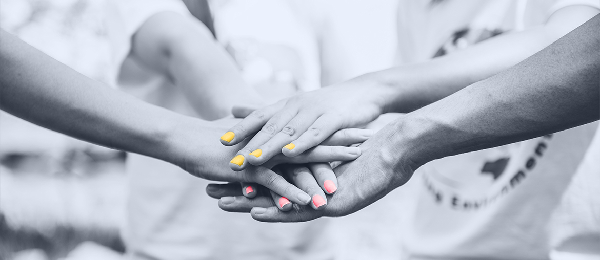

Document Collaboration Platform
Elinext built a .NET and Angular platform with QA and DevOps for regulated financial workflows.
Read case studyProposal brief
TrnDigital is pushing hard into Microsoft 365, Azure, Power Platform, Copilot, and managed services. That mix needs senior hands, clear QA, and steady client delivery.
Saw you are hiring a Director, Microsoft Consulting. Here is how Elinext can support the current project load while that leader is found and onboarded.
The Director search says your Microsoft practice is moving from strong demand to bigger delivery scale. The hard part is keeping Azure, Microsoft 365, Power Platform, and Copilot work moving while leadership hiring takes time. If delivery capacity lags, good client work can slow down, and your core team carries too much. A white-label engineering squad can protect speed without touching your client ownership.
Elinext supplies a white-label squad that works inside TrnDigital's delivery flow, with weekly demos and clear handoffs.
Review the Microsoft backlog, client dates, handoff points, urgent risks, and roles that block delivery today.
Put senior .NET, Azure, or Power Platform engineers on one live project under your lead.
Add QA automation, Azure DevOps checks, release notes, and smoke tests so new capacity stays clean.
Scale the squad, reduce it, or hand off to internal hires with documented context and clean project notes.
Elinext built a .NET and Angular platform with QA and DevOps for regulated financial workflows.
Read case study
A US cloud platform built with C#, Azure App Services, .NET, Angular, and MS SQL.
Read case study